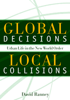

A new politics for a new economy
A new politics for a new economy


 A new politics for a new economy
A new politics for a new economy

|  |
Global Decisions, Local CollisionsUrban Life in the New World OrderDavid Ranneypaper EAN: 978-1-59213-001-6 (ISBN: 1-59213-001-1) |
"Global Decisions, Local Collisions is a solid, well-written, and well-substantiated argument with a number of case studies on topics of major interest. [It] adds new analysis that makes a real and important contribution."
—Peter Marcuse, author of Globalizing Cities and Of States and Cities
The politics of the past must be rethought. They were designed for a world where the U.S. manufactured at home, and where portions of U.S.-based labor had traded social stability for high wages. In this thought-provoking work, David Ranney shows how our world has changed and offers a plan for remaking progressive politics to meet the crises brought about by what George H. W. Bush first termed "the new world order. "
Drawing from his experiences in Chicago politics, first as a factory worker and later as an activist and academic, Ranney shows how the increasing mobility of capital, the easy availability of credit, and a changing government policies have reshaped the urban world where U.S. workers live their everyday lives. This is not the story of the interconnectedness of modern business, but rather the need for self-respecting people who bring home a weekly paycheck to see the common, global problems they face, and to work together to bring about meaningful change.
Showing how globalization has led to specific local consequences for cities and the workers that inhabit them, David Ranney presents a means for taking stock of the effects of globalization; a look at these changes in labor markets; economic development politics; housing policy; and employment policies; and an organizing strategy for this new economic and social era.
Excerpt available at www.temple.edu/tempress
"Ranney's book should be of considerable interest and use to scholars working in the urban political economy and on the local impacts of the processes of global economic reorganization. His descriptions are lucid and well-argued. His most original contribution comes in deepening and advancing a sophisticated theoretical understanding of these processes through examination of the Chicago cases. This he does masterfully, and in doing so, makes what I believe will be a significant contribution to the debate."
—Adolph Reed, Jr., Professor of Political Science, Graduate Faculty, New School for Social Research
"This is an important book. The author brings to bear finely honed analytic skills and a command of the secondary literature combined with hands-on research and, crucially, a discussion of his own experiences as a worker in Chicago and as a political activist to understand the nature of the New World Order."
—SAGE Race Relations Abastracts
"[It] is a timely and important book. It resonates with contemporary debates and discussions in academia and beyond about the effect of global level changes on everyday life....it is an impressive and thoughtful addition to our understanding of the collusion of government policies and capital mobility in transforming people's lives."
—Work and Occupations, February 2004
"In his valuable recent book... Ranney provides a clear critique of investor-rights globalization, a lucid analysis of how it touches everyday lives, and offers sensible democratic alternatives to the specter of overwhelming corporate domination."
—Z Magazine
"This book contains some informative case studies."
—The Journal of Sociology and Social Welfare
"The significance of this book for globalization readers and activists is that the author does a superb job of linking the forces unleashed in a global world to struggles or collisions that one finds locally. The author's career is unique in that his perspective combines the insights of an academic with the instincts of one who has been engaged on the front line as a labor organizer and critic of global economic policy."
—Policy Research Action Group (pdf)
"...this book is an important study that should be of interest to scholars and professionals such as planners and economists working in the fields of political economy and community development. It makes a valuable contribution to our understanding of the impact of globalization on our communities."
—Journal of the American Planning Association
Acknowledgments
Timeline
1. Introduction
2. Philosophical Perspectives
3. The Evolution of a New World Order
4. Manufacturing Collapses in Chicago
5. The New World Order and Local Government: Chicago Politics and Economic Development
6. Where Will Poor People Live?
7. Jobs, Wages, and Trade in the New World Order
8. Organizing to Combat the New World Order
9. Implications and Directions
Notes
Index
David Ranney is a Professor in the College of Urban Planning and Public Affairs at the University of Illinois at Chicago and Associate Fellow at the Institute for Policy Studies in Washington D.C. He has worked extensively with community and labor organizations in the Chicago area that are concerned with job creation, retention, and assistance to dislocated workers. He is the author of three books and numerous articles and monographs on issues of employment, labor and community organization, and city planning.
Urban Studies
Labor Studies and Work
© 2015 Temple University. All Rights Reserved. This page: http://www.temple.edu/tempress/titles/1647_reg.html.